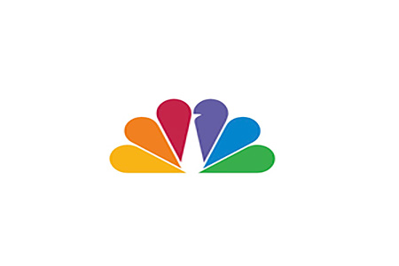

Paul Rand
Paul Rand is known as one of the most important logo designers ever. He believed that logos should be simple, clear, and easy to remember.
Learn more about Paul RandSagi Haviv
I think it’s cool how he can take a complicated idea and turn it into just one powerful symbol.
See Sagi Haviv's Logo WorkSaul Bass

His logos are simple but really stand out, and they make you feel something.
Explore Saul Bass logos